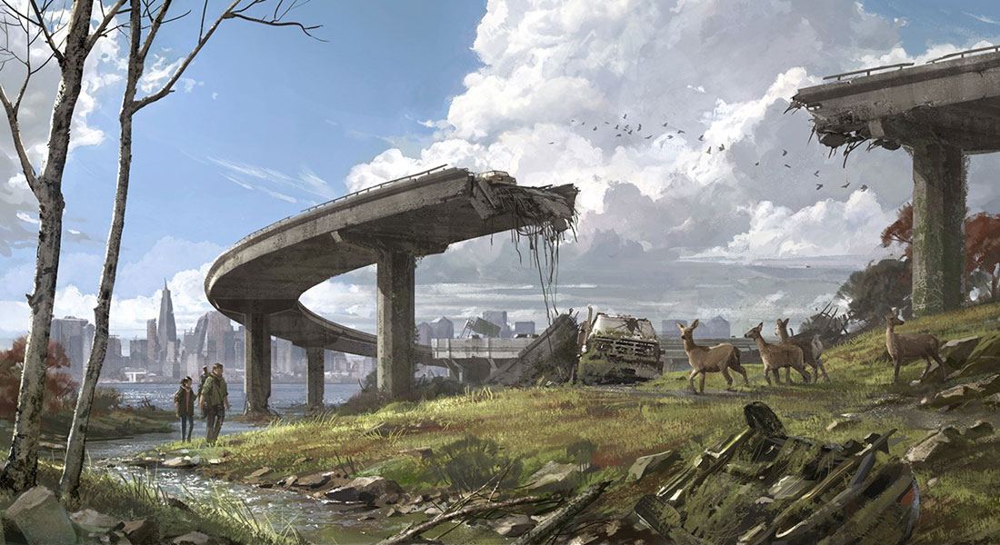
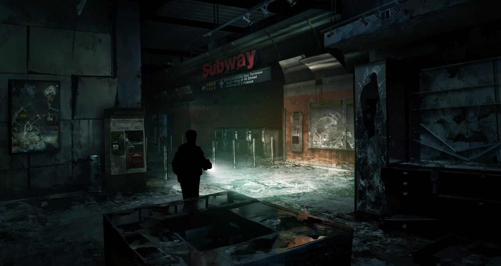
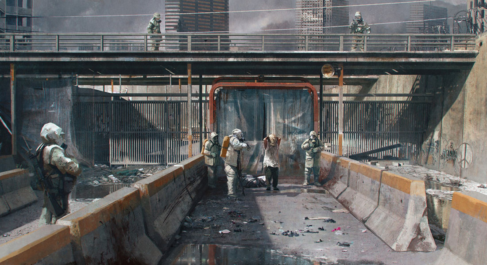

PROCESSO CRIATIVO
O processo criativo de The Last of Us envolveu a construção de uma história emocionante, personagens marcantes e um mundo pós-apocalíptico detalhado, buscando criar uma experiência profunda e envolvente para os jogadores.
Ideia
Surgiu da vontade da Naughty Dog de criar uma experiência que combinasse sobrevivência, ação e uma narrativa profundamente emocional. Inspirado por conceitos de histórias pós-apocalípticas e pelo comportamento de fungos parasitas na natureza, o projeto imaginou um mundo devastado por uma pandemia, onde os seres humanos precisariam lutar não apenas contra criaturas infectadas, mas também contra outros sobreviventes. A relação entre Joel e Ellie tornou-se o centro da história, permitindo explorar temas como perda, esperança, afeto e até onde alguém estaria disposto a ir para proteger outra pessoa. .
Roteiro e personagens
Joel e Ellie foram construídos com personalidades, histórias e conflitos próprios, permitindo que a relação entre os dois evoluísse ao longo da jornada de forma gradual e natural. Além dos protagonistas, os demais personagens foram elaborados para representar diferentes formas de lidar com a perda, o medo, a sobrevivência e a esperança, tornando a história mais humana e contribuindo para os principais acontecimentos do jogo.
Desenvolvimento
Durante a produção, a equipe trabalhou na construção de ambientes pós-apocalípticos detalhados, no comportamento dos inimigos e em sistemas de combate, furtividade e criação de itens. Também houve grande atenção à captura de movimentos, às expressões dos personagens e à ambientação sonora.
Jogo final
The Last of Us foi oficialmente anunciado em 2011; foi amplamente divulgado e muito aguardado. A Naughty Dog promoveu o jogo por meio de trailers em vídeo e demonstrações, anunciando detalhes específicos sobre o jogo à medida que o desenvolvimento avançava.
GALERIA

